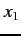
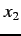
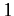
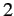
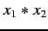
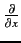
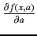
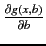

The algorithm for the multi-variate case is similar to the single-variate case described above, but slightly more complicated. Multi-variate expressions have the added complication that the terms in the summation of Eq. 1 have to be evaluated separately for each independent variable. This means that a DS and a table of measurement errors (ME) per independent variable have to be maintained.
Symbols (variables and constants) in fussy are tagged with a number or a list of numbers (the IDs) and a type. Symbols representing normal variables are of the type VAR and have a single unique ID, a random error and a partial derivative (of value 1) associated with them. Symbols representing sub-expressions are of the type PARTIAL_VAR and have a list of IDs and a corresponding list of random errors and partial derivatives associated with them. List of unique IDs and the random errors of the independent variables in the expression on the right-hand side (RHS) of the assignment operator constitute the list of IDs and random errors for the PARTIAL_VAR type symbols. When a symbol (of either type) is pushed on the VMS, the entire list of associated IDs is copied to the ID list of the object on the stack. The corresponding random errors and partial derivatives are also copied in the appropriate locations in the ME table and pushed on the appropriate DS respectively. For example, let the IDs of  and  be  and  respectively. The result of  on the top of the VMS will have an ID list of {1,2} retaining the information that the result is statistically dependent on the independent variates and . If this result is further used as part of another expression, this information will be used to propagate the chain rule for these variables correctly.
Since any expression is built using basic mathematical operators or built-in functions, for the purpose of proving the correctness of the error propagation algorithm for any arbitrary expression, it is sufficient to prove that the algorithm works for the fundamental mathematical operators and built-in functions. The algorithms for evaluating the partial derivatives involving mathematical operators and the final evaluation of the resulting error is described below as pseudo code (see Appendix A for an example). The algorithms are described using the following pseudo functions:
All the operators described below are binary operators. They all pop two values from the top of the VMS, compute the result by applying the corresponding operator, store the value in a temporary stack object, set its ID to the union of the IDs of the operands and push it on the VMS. These operations are performed by the following pseudo function:
ComputeResult(L,R,Expr)
{
L = pop(); R = pop();
S = Expr(L,R);
S.IDList = union(L.IDList,R.IDList);
push(S);
}
Expr implements the arithmetic of the mathematical operation on
L and R.
Partial derivatives with respect to all the IDs in the ID lists of the operands are at the top of the corresponding DSs. For all the IDs common between the two operands, two values are poped from the corresponding DS, say dxR and dxL. The common IDs represent the variables which are part of both the operands (here ). Operations to compute the partial derivatives with respect to these common variables (equivalent of the  operator) are represented by the pseudo function dCommonVar below. The function CommonExpr implements the arithmetic for the derivative computation and is set to the appropriate function for the various operators. These values are computed for each ID in the set composed of the intersection of the ID lists of the two operands, and pushed on the corresponding DS (here, the ID of ). Finally, all IDs common between the two operands are removed from the ID lists of each operand.
dCommonVar(L,R,CommonExpr)
{
IDList = intersection(L.ID,R.ID);
for ID in IDList
{
dxR = pop(DS[ID]);
dxL = pop(DS[ID]);
push(CommonExpr(L,R,dxL,dxR),DS[ID]);
L.Remove(ID); R.Remove(ID);
}
}
The list of IDs of the two operands now has IDs corresponding to the
non-common variables only (
and
here). Operations for the
partial derivatives of the operands with respect to these variables is
represented by the pseudo function dNonCommonVar below. LExpr and RExpr computes the value of these derivatives for the
LHS and RHS of the operator (equivalent of computing

and

) using
the values from the top of the appropriate
DS.
dNonCommonVar(L,R,LExpr, RExpr)
{
for ID in L.IDList
Top(DS[ID]) = LExpr(L,R,Top(DS[ID]));
for ID in R.IDList
Top(DS[ID]) = RExpr(L,R,Top(DS[ID]));
}